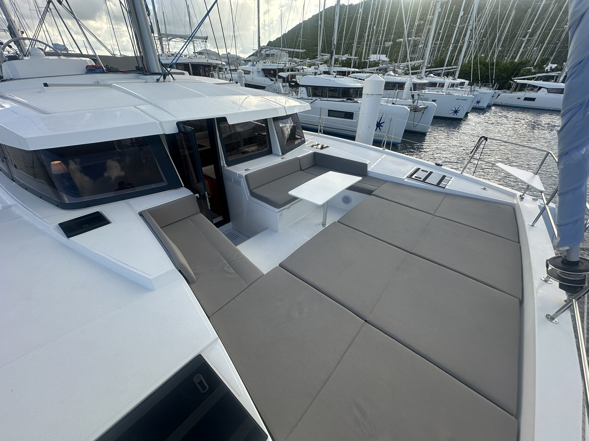
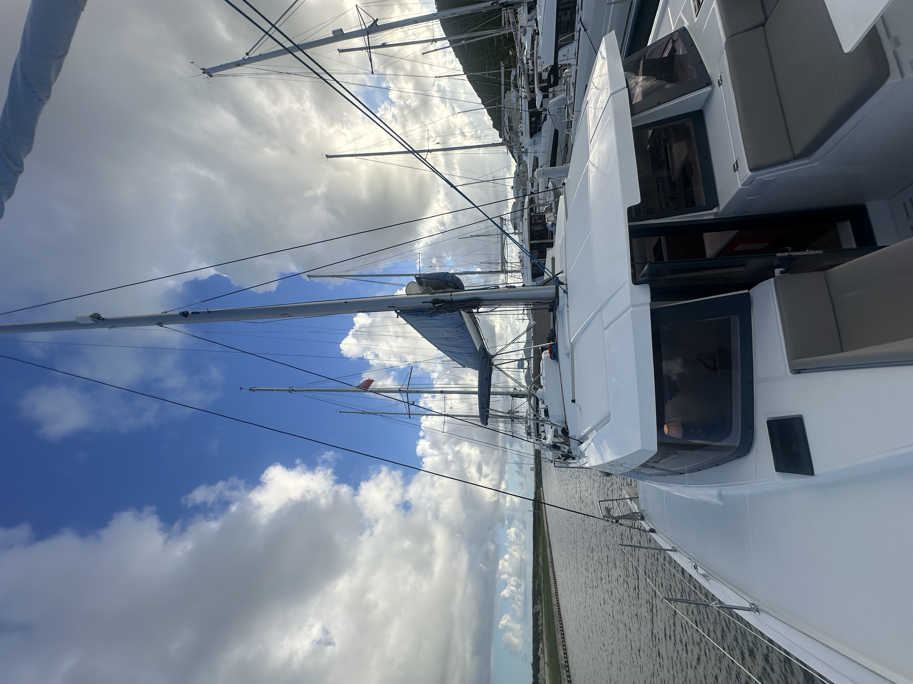
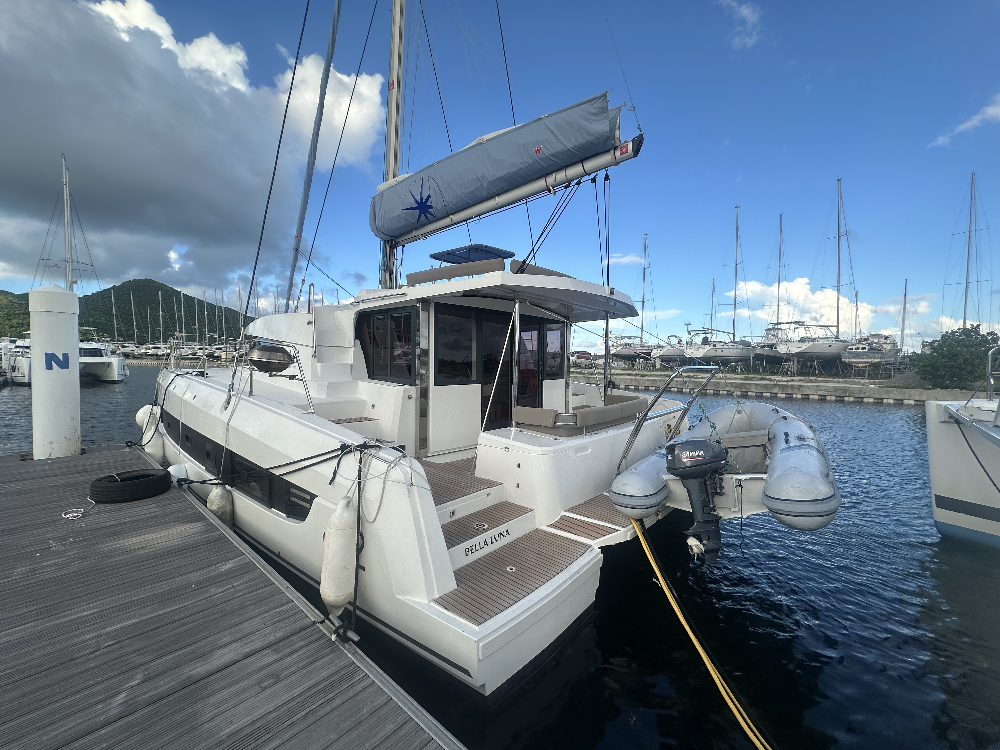
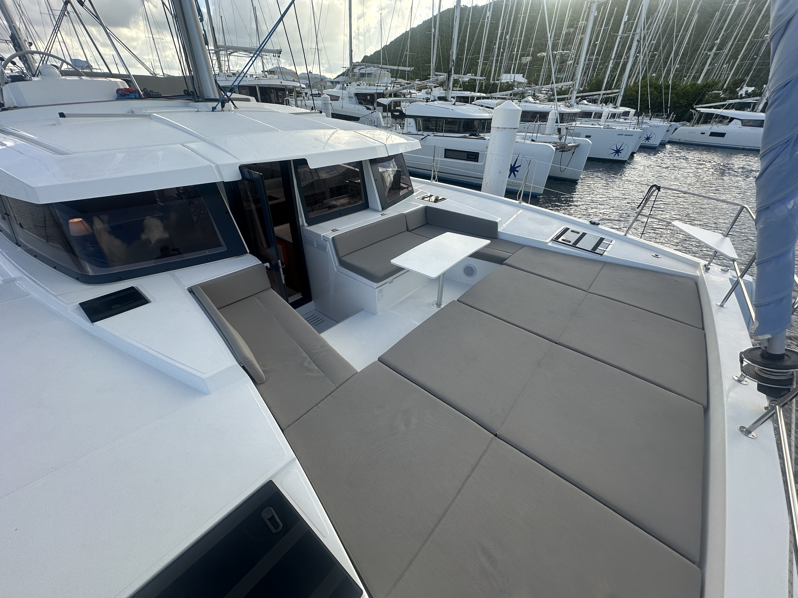
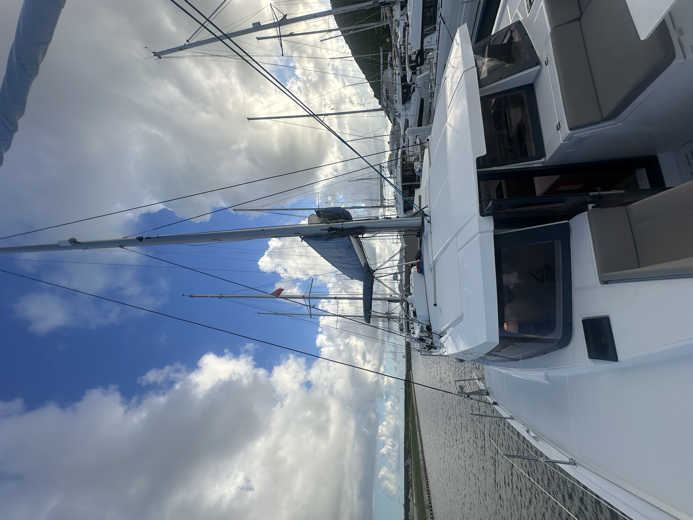
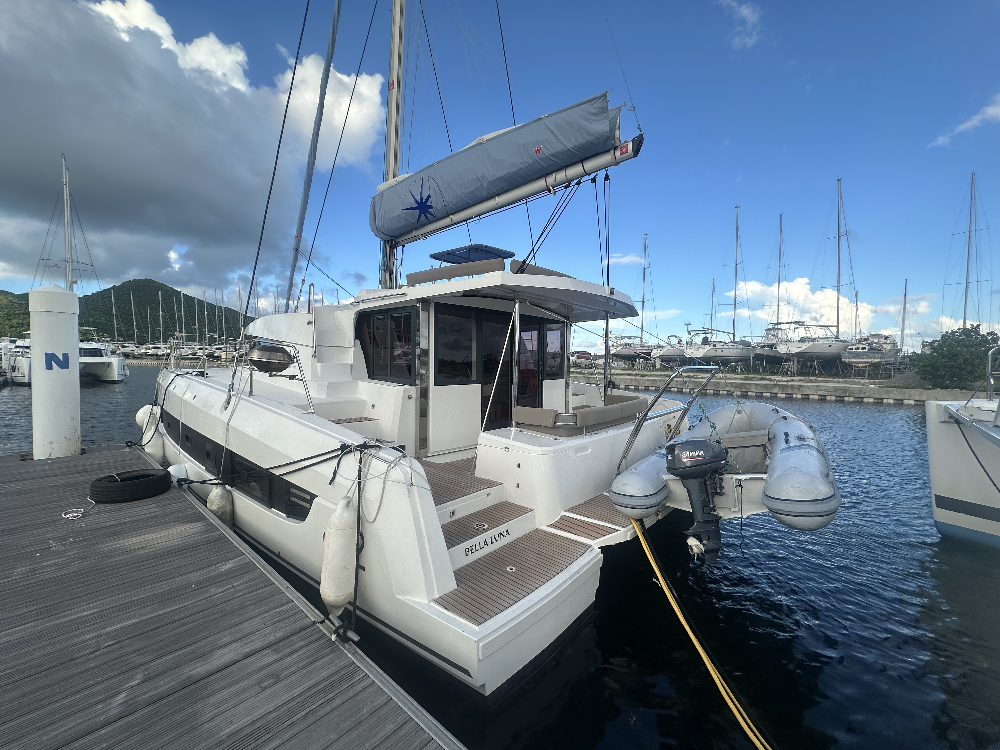
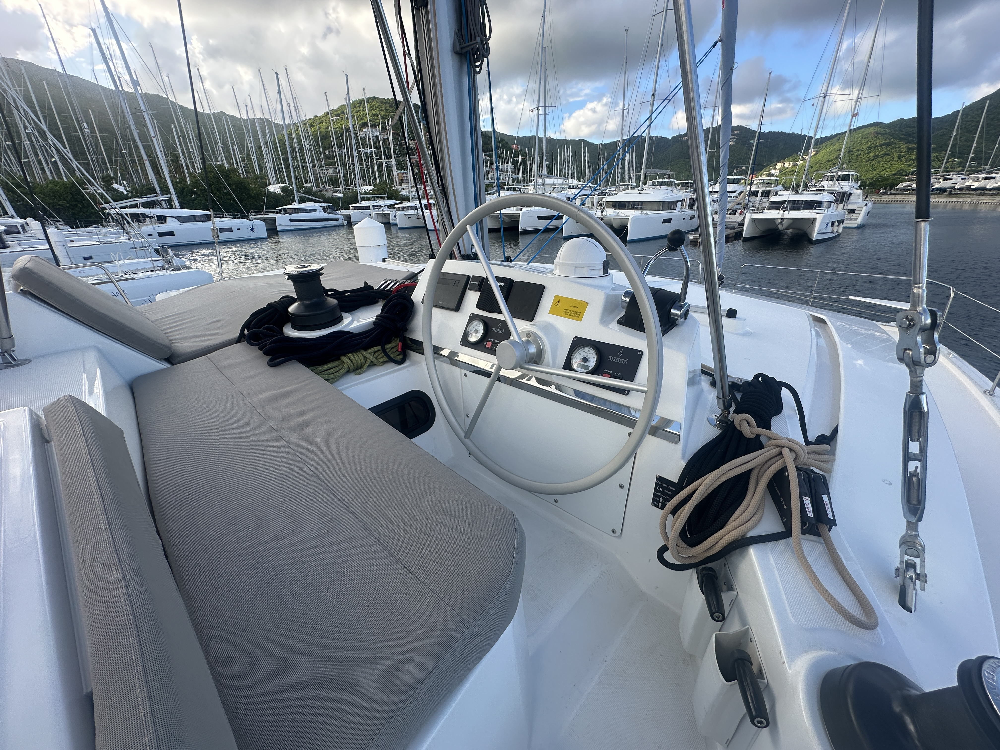
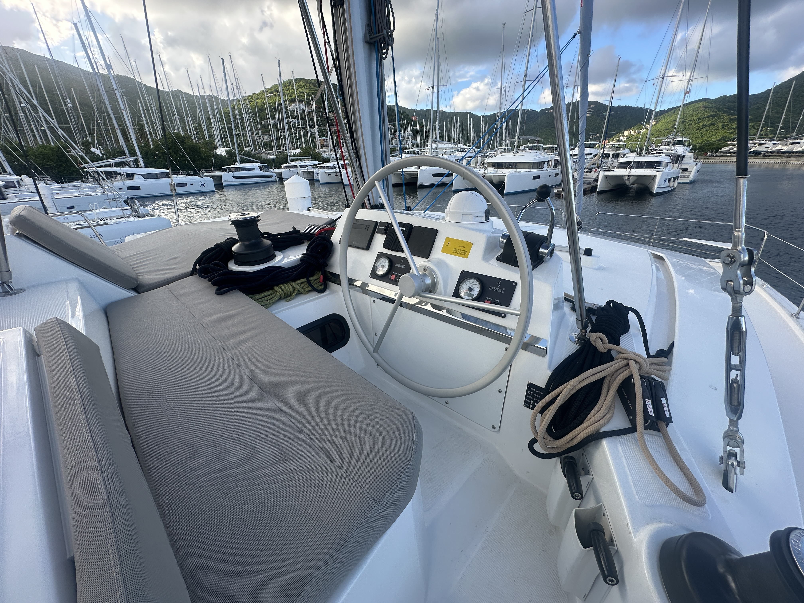

Welcome Aboard
The Bella Luna is a stunning 2024 Bali 4.2 Catamaran, designed for those who seek the perfect balance of performance and comfort. Featuring the signature "Open Space" design, the Bella Luna seamlessly connects the aft cockpit and saloon with a tilting garage door, creating a massive living area for you and your guests.
Whether you are relaxing on the solid foredeck, enjoying a sunset from the flybridge, or resting in the luxurious owner's suite, the Bella Luna offers a sailing experience unlike any other.


 






 
